Ultimate Spider-Man Vol 2 (2009 - 2011)
| Comic Book | Release Date | Cover |
|---|---|---|
| Ultimate Spider-Man Vol 2 #1 The New World According to Peter Parker | 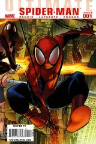 | |
| Ultimate Spider-Man Vol 2 #2 The New World According to Peter Parker (Part II) | 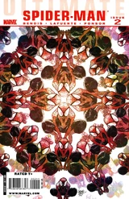 | |
| Ultimate Spider-Man Vol 2 #3 The New World According to Peter Parker (Part III) | 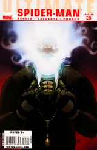 | |
| Ultimate Spider-Man Vol 2 #4 The New World According to Peter Parker (Part IV) | 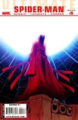 | |
| Ultimate Spider-Man Vol 2 #5 The New World According to Peter Parker (Part V) | ||
| Ultimate Spider-Man Vol 2 #6 The New World According to Peter Parker (Part VI) | ||
| Ultimate Spider-Man Vol 2 #7 Crossroad (Part 1) | 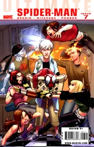 | |
| Ultimate Spider-Man Vol 2 #8 Crossroad (Part 2) | 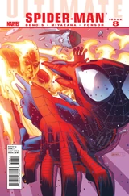 | |
| Ultimate Spider-Man Vol 2 #9 Tainted Love (Part 1) | ||
| Ultimate Spider-Man Vol 2 #10 Tainted Love (Part 2) | 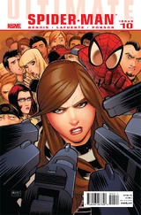 | |
| Ultimate Spider-Man Vol 2 #11 Tainted Love (Part 3) | 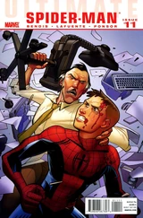 | |
| Ultimate Spider-Man Vol 2 #12 Tainted Love (Part 4) | 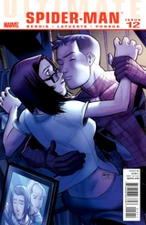 | |
| Ultimate Spider-Man Vol 2 #13 Tainted Love (Part 5) | 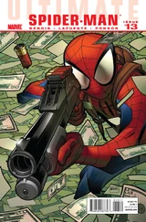 | |
| Ultimate Spider-Man Vol 2 #14 Tainted Love (Part 6) | 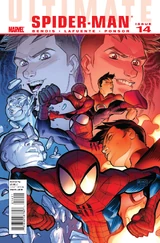 | |
| Ultimate Spider-Man Vol 2 #15 Tainted Love (Epilogue) | 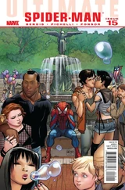 | |
| Ultimate Spider-Man Vol 2 #150 Spidey's 150th Anniversary Special | 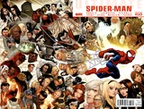 | |
| Ultimate Spider-Man Vol 2 #151 Superhero Training (Part 1) | 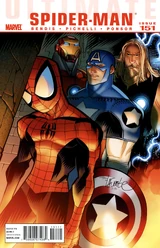 | |
| Ultimate Spider-Man Vol 2 #152 Superhero Training (Part 2) | 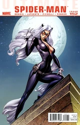 | |
| Ultimate Spider-Man Vol 2 #153 Death of Spider-Man: Prelude (Part 1) | 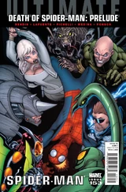 | |
| Ultimate Spider-Man Vol 2 #154 Death of Spider-Man: Prelude (Part 2) | 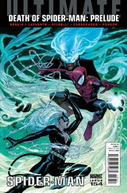 | |
| Ultimate Spider-Man Vol 2 #155 Death of Spider-Man: Prelude (Part 3) | 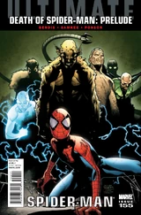 | |
| Ultimate Spider-Man Vol 2 #156 Death of Spider-Man (Part 1) | 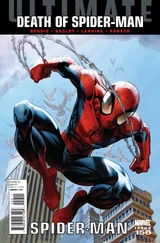 | |
| Ultimate Spider-Man Vol 2 #157 Death of Spider-Man (Part 2) | 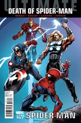 | |
| Ultimate Spider-Man Vol 2 #158 Death of Spider-Man (Part 3) | 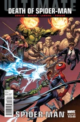 | |
| Ultimate Spider-Man Vol 2 #159 Death of Spider-Man (Part 4) | 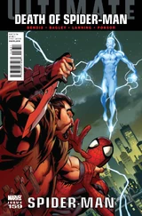 | |
| Ultimate Spider-Man Vol 2 #160 Death of Spider-Man (Part 5) | 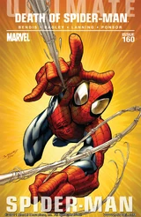 |